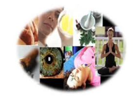
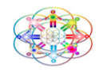
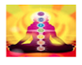
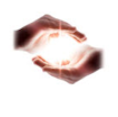
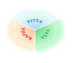

Terapias alternativas |
Las terapias alternativas son un conjunto de tratamientos naturales no invasivos que se engloban dentro de la Medicina Alternativa, tiene como finalidad el restablecimiento de la salud física y emocional del paciente. Algunos ejemplos son: acupuntura, reflexología, shiatsu, masaje ayurvédico, etc. |
Constelaciones familiares |
Terapia bioenergética |
||
|  |
Se trata de un método que se usa para sacar a relucir los problemas que las personas tienen desde su niñez |
 |
El análisis bioenergético supone que una persona sana es una persona vial que goza de buena energía |
Reiki |
Medicina ayurvédica |
||
|  |
El reiki te invita por un rato a despejar tu mente para que trabajes sobre los puntos energéticos que tiene tu cuerpo y así destrabar la energía de ellos. |
 |
Utiliza terapias naturales y hace hincapié en el cuidado de la dieta, el trabajo y la familia como puntos claves para mejorar y cuidar la salud. |
Es el momento de trabajar en tí
Es el momento de resolver lo que te limita para recuperar tu libertad y tener la paz emocional y mental que por naturaleza te pertenece
POdemis abandonar de forma efectiva y rápida los probelmas que mas afectan hoy al ser humano. Las terapias nos ayudan a liberarnos de emociones, a vivir sin culpas, liberar viejas creencias personales, familiares y de tu entorno, abandonar el uso de sustancias tóxicas y crear una vida mas equilibrada tomando conciencia de la vida y mucho más. Recuerda que si estás leyendo ers porque tu ser está listo para resolver. No olvides lo mucho que te ha costado tu pasado, revísalo, te darás cuenta que los daños son cuantitativos.